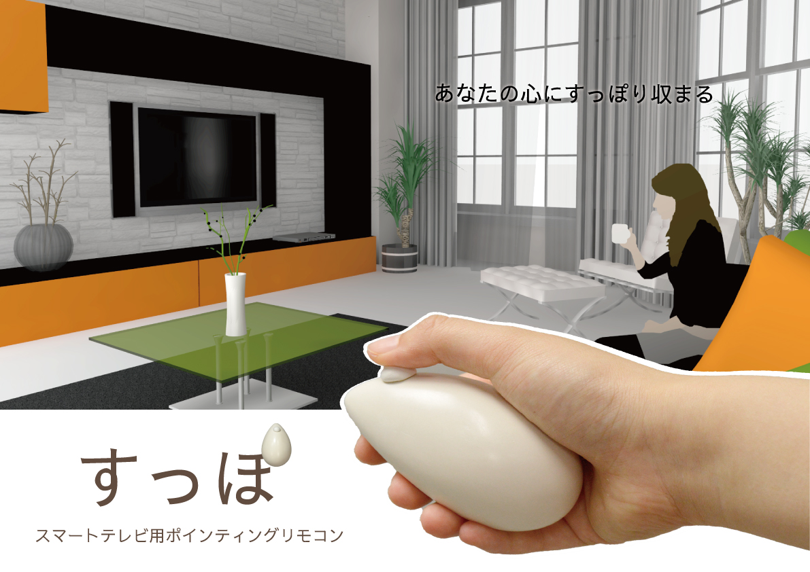

期間 | 2ヶ月 人数 | 1人 使用ソフト | Illustrator，Photoshop，SketchUp
マウスのプロダクトデザインを行う授業で，アイデアスケッチからプレゼンテーションまで一通りを体験した． 具体的には，アイデアスケッチをした後，実際にその模型を作り，模型の写真を利用したポスターを制作，最後にプレゼンテーション，投票を行った． 多くの学生がパソコン用のマウスを提案したが，私は唯一スマートテレビ用のポインティングデバイスを制作した． さらに，ポスター背景の画像も三次元モデリングソフトを使い自作した．そのような工夫が認められ，最後の投票では第二位に選ばれた．